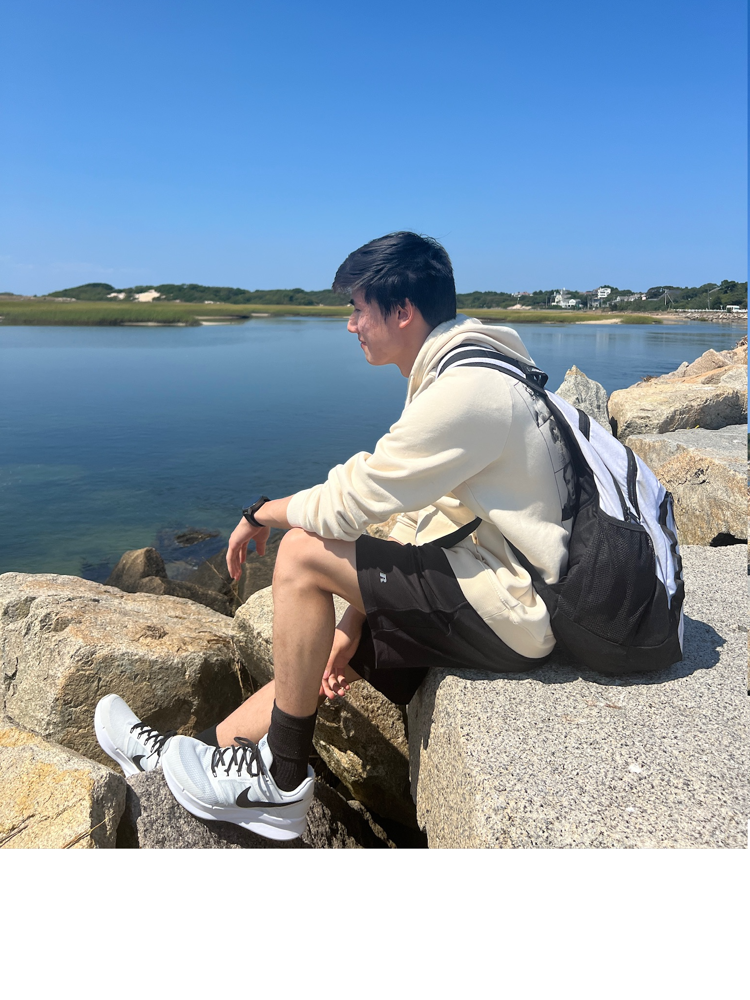

Home

My name is Kyle Yung, I am currently a senior at Boston University studying Computer Science. I have experience as both a Software Engineer and an IT Technician. Outside of Computer Science, I enjoy traveling, drawing and hanging out with friends.